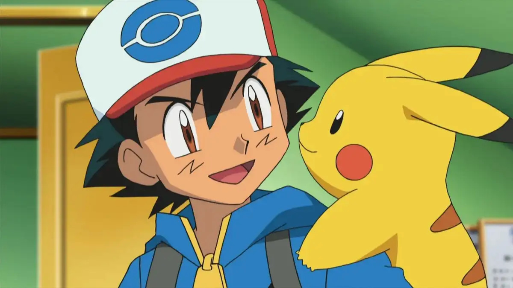
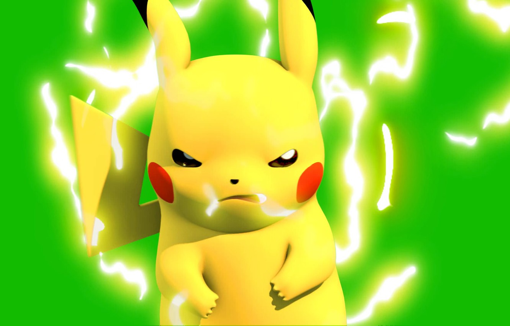

Hello
Pikachu is a fictional species in the Pokémon media franchise. Designed by Atsuko Nishida and Ken Sugimori, Pikachu first appeared in the 1996 Japanese video games Pokémon Red and Green created by Game Freak and Nintendo, which were released outside of Japan in 1998 as Pokémon Red and Blue. Pikachu is a yellow, mouse-like creature with electrical abilities. It is a major character in the Pokémon franchise, serving as its mascot and as a major mascot for Nintendo.

Physiology
Pikachu are small, and cute mouse-like Pokémon. They are almost completely covered by yellow fur. They have long yellow ears that are tipped with black. A Pikachu's back has two brown stripes, and its large tail is notable for being shaped like a lightning bolt, yet its brown tip is almost always forgotten. Pikachu have short arms with five tiny fingers on forehands and three sharp fingers on their hind legs. On its cheeks are two circle-shaped red pouches used for storing electricity.

Special abilities
Pikachu's special ability is Static, which can cause paralysis in battle if hit by a physical move. In Pokémon Black and White's Dream World, the Trainer receives a Pikachu with the Lightning Rod ability.
Pikachu are capable of learning Volt Tackle, a powerful Electric-type physical move exclusive to the Pikachu family of Pokémon.
Partner Pikachu is also capable to learning special moves: Zippy Zap, Floaty Fall, Splishy Splash, and the Partner Power, Pika Papow.
Pikachu are capable of learning Volt Tackle, a powerful Electric-type physical move exclusive to the Pikachu family of Pokémon.
Partner Pikachu is also capable to learning special moves: Zippy Zap, Floaty Fall, Splishy Splash, and the Partner Power, Pika Papow.